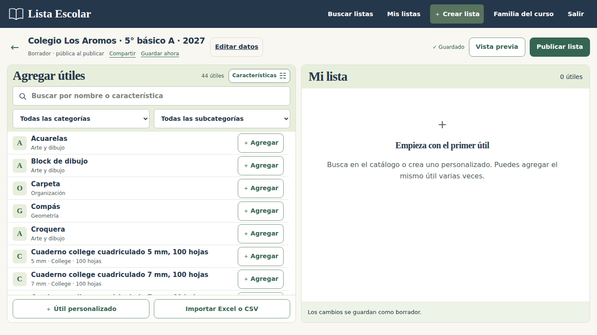
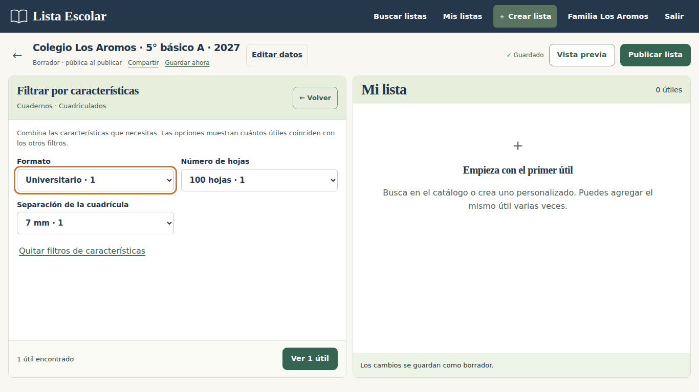
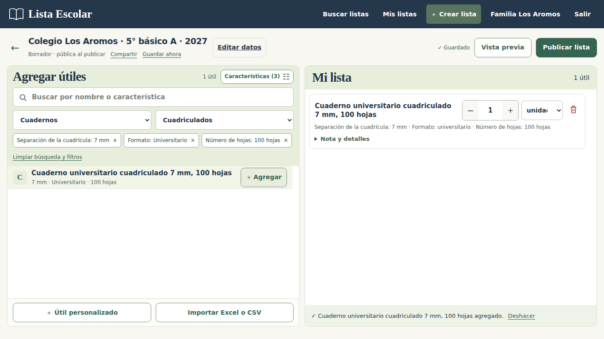
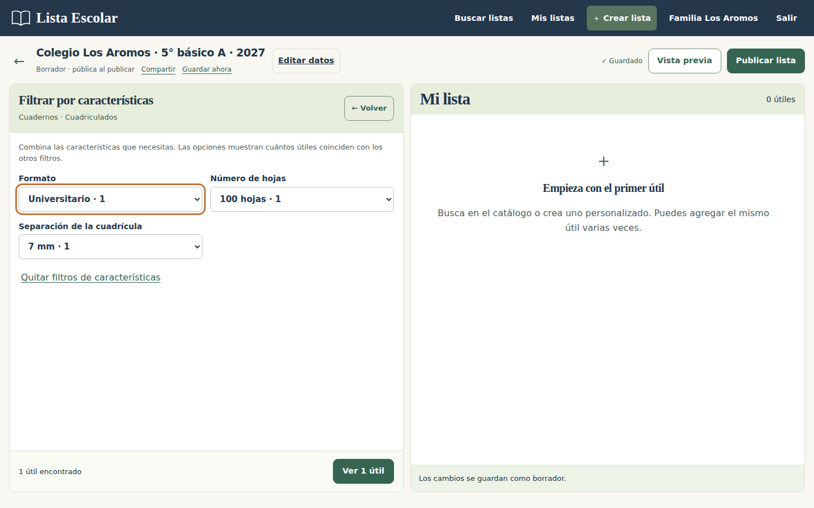
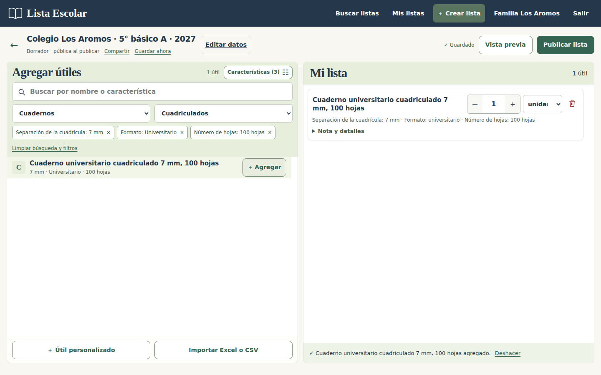
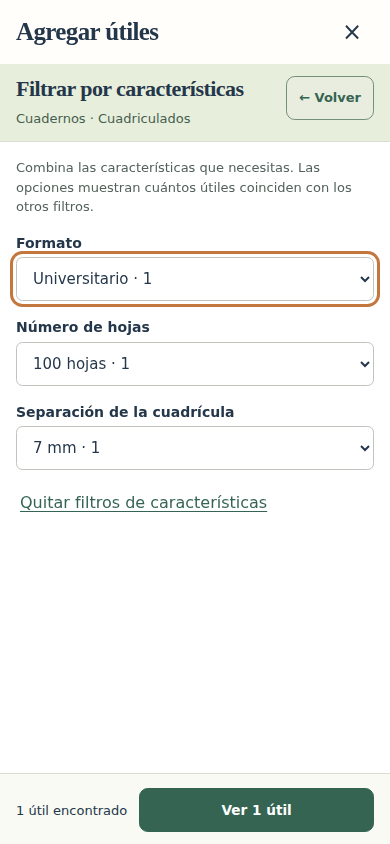
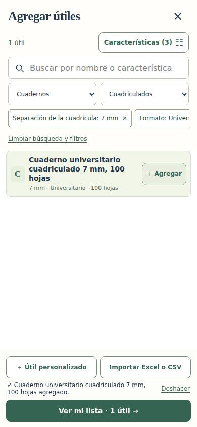
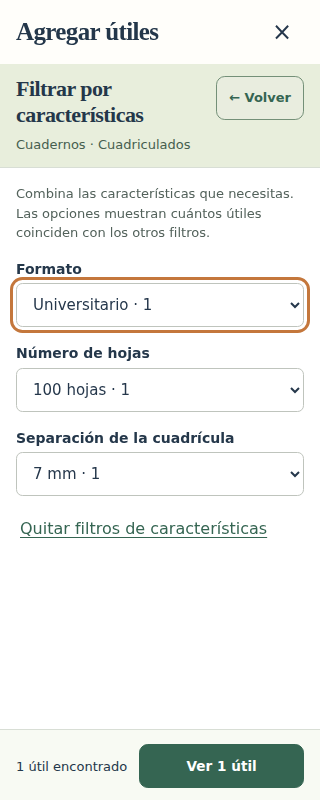
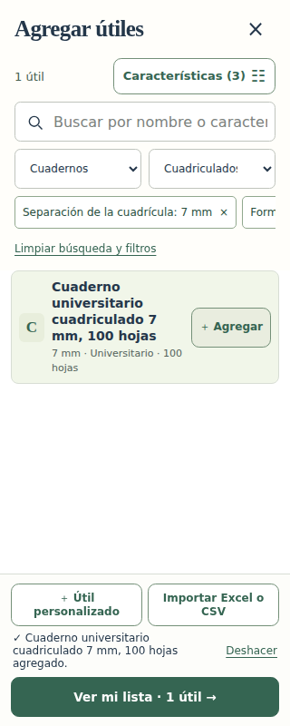

Buscar útiles por sus características
Capturas reales de la aplicación, tomadas con datos de prueba en una base aislada el 10 de noviembre de 2026.
Ejemplo: Cuadernos → Cuadriculados → Universitario → 100 hojas → 7 mm. Los filtros muestran las opciones y cantidades disponibles; la búsqueda también reconoce características, como cuaderno univ 100 7mm.
Se mantiene el catálogo junto a la lista en escritorio y un selector dedicado en teléfonos. Pulsa una imagen para verla a tamaño completo.
Catálogo · 1366 × 768

Escritorio · 1366 × 768




Escritorio · 1440 × 900




Teléfono · 390 × 844




Teléfono estrecho · 320 × 800



